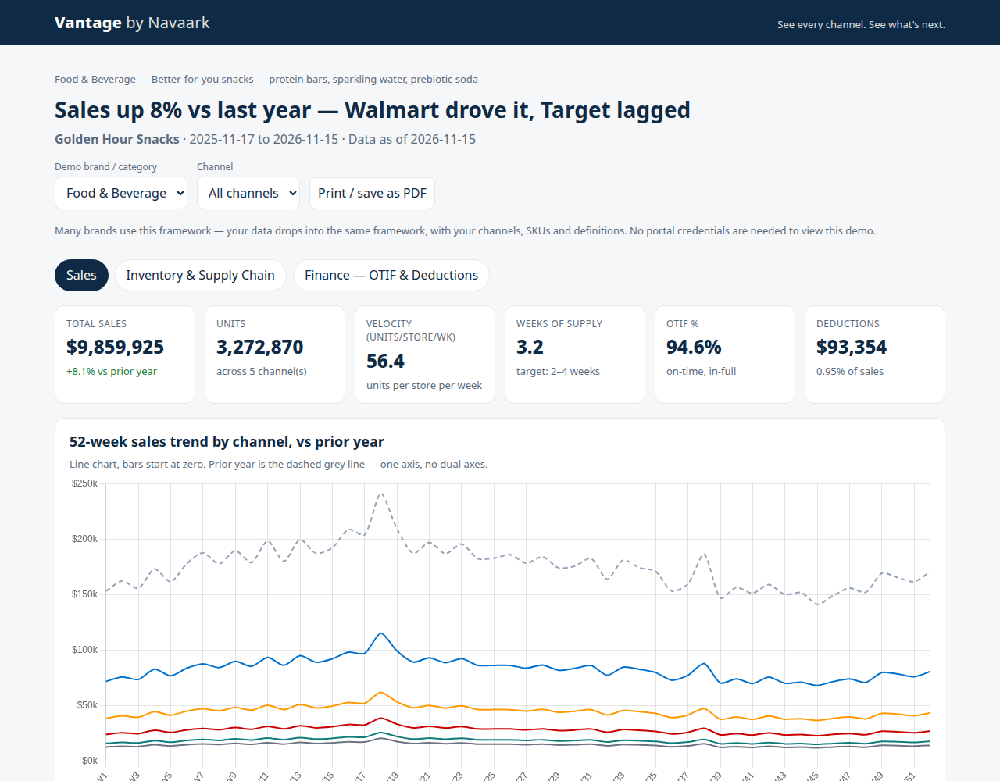

Vantage by Navaark
Consolidated retail sales analytics for CPG brands that shows which stores and SKUs are moving across Walmart, Amazon, Target and DTC, built on deep Walmart Scintilla expertise.
Walmart Amazon Target DTC Distributors
Sample data in the Vantage framework — book a call to see it with your numbers.

Total sales, units and share by channel, with year-over-year change — no more stitching portals and spreadsheets together.
Units per store per week, in-stock %, and weeks of supply, so you see a stockout risk before the shelf goes empty.
OTIF % and deductions by reason, so service issues and leakage surface while there is still time to act.
A four-week forecast by channel and the SKUs most at risk, from the same trend you are already looking at.
What we measure grows with your brand. Every brand starts with the same core signals. As you grow, we add the ones that matter at your size, so the view stays sharp from the first doors to thousands of them. Every signal below carries its reason, what it tells you and what it costs to miss it.
| Signal | What it is | Why it matters | Emerging | Small | Medium | Large |
|---|---|---|---|---|---|---|
| Every brand | ||||||
| Break-even velocity | The minimum units a SKU must sell per store per week to survive the next reset. | A SKU below the bar gets cut at reset, and you find out after. This tells you which SKUs are safe and which need action before the meeting. | ✓ | ✓ | ✓ | ✓ |
| Launch curve | Cumulative sales by week after launch, plotted against the plan or the same weeks last year. | A launch that will not stick still looks fine in week two. This shows in the first 4 to 8 weeks whether it will hold, while you can still act. | ✓ | ✓ | ✓ | ✓ |
| Sales per available store-day | Sales divided by store-days when the product was actually in stock. | A low velocity number can mean nobody wants it, or it was never on the shelf. This tells you which one, so you fix the right problem. | ✓ | ✓ | ✓ | ✓ |
| Repeat purchase rate | Share of first-time buyers who buy again. | Sales can grow on new buyers while nobody comes back. This catches that, so you know the product itself is working. | ✓ | ✓ | ✓ | ✓ |
| Door persistency | Share of doors that stocked you at launch and still stock you 12 months later. | A brand can win doors all year and still shrink if old doors keep dropping. This shows whether you are keeping distribution, which is the business. | ✓ | ✓ | ✓ | ✓ |
| Revenue per available door | Total revenue divided by doors available, sold or not. | You can add doors and still get weaker per door. This shows it with one number, so growth is real and not just more doors. | ✓ | ✓ | ✓ | ✓ |
| Net realisation rate | Cash actually kept after deductions, chargebacks and markdown money, as a share of invoiced sales. | Invoiced sales can grow while the money you keep shrinks. This shows what you actually keep, after deductions, chargebacks and markdown money. | ✓ | ✓ | ✓ | ✓ |
| Walk-away rate | Share of shoppers who came for your product and left without it because the shelf was empty. | An empty shelf is a lost sale you never see in the sales report. This makes it visible, so you can fix the shelf instead of losing the shopper. | ✓ | ✓ | ✓ | ✓ |
| Signal-to-action time | Days from spotting a problem (velocity drop, stockout) to the fix (buyer call, shipment, markdown). | A slow response turns a fixable dip into a delisting. This measures how fast you act, and what gets measured gets done faster. | ✓ | ✓ | ✓ | ✓ |
| Buyer conversion rate | Share of buyer meetings that become listings, and listings that become reorders. | Meetings that go nowhere and listings that never reorder look the same as progress. This shows where the funnel leaks, so you fix the pitch or the product. | ✓ | ✓ | ✓ | ✓ |
| Weeks of supply | How many weeks current stock lasts at current sales speed. | Stock that sits too long is cash stuck on a shelf, and stock that runs out is a lost sale. This shows both first, so you can act before either one costs you. | ✓ | ✓ | ✓ | ✓ |
| Add when small | ||||||
| Same-door growth | Revenue from doors you already had, this year vs last year. | New doors can hide that your base is flat. This shows whether growth compounds from the doors you already have. | ✓ | ✓ | ✓ | |
| Door revenue retention | Revenue kept from doors you still have, ignoring any growth from them. | New doors flatter the total while the core base leaks. This strips out expansion and shows whether you are keeping what you won. | ✓ | ✓ | ✓ | |
| SKU utilisation | Share of listed SKUs that actually sell. | A brand with 25 SKUs where 6 do all the work carries dead weight into every buyer meeting. This shows which SKUs earn their place. | ✓ | ✓ | ✓ | |
| Cost per door served | Trade spend, logistics and deductions per door. | Costs creep up per door while revenue per door stays flat, and margin shrinks before profit shows it. This catches the creep early. | ✓ | ✓ | ✓ | |
| Profit per available door | Gross profit per door after trade spend and deductions. | Revenue per door says nothing about cost, so a door can look good and lose money. This is the profit version, and it decides whether a door is worth keeping. | ✓ | ✓ | ✓ | |
| Hero depth | Share of sales from the hero SKU or category in the first year. | You can drift across scattered listings and call it growth. This shows whether you are building depth in your core. | ✓ | ✓ | ✓ | |
| Repeat stockout rate | Share of stores that go out of stock again within 30 days of a restock. | A restock that does not hold means the fix failed, and the store goes empty again. This shows it, so you fix allocation or demand instead of just shipping more. | ✓ | ✓ | ✓ | |
| Sample-to-listing rate | Share of samples or sell stories sent to buyers that become listings. | More meetings can hide a falling close rate. This separates closing skill from lead volume, so you fix the pitch or the price. | ✓ | ✓ | ✓ | |
| Launch on-time rate | Share of launches that hit shelves on the planned date. | A late launch misses the reset window and the promo calendar, and delays everything after it. This shows whether launches land on plan. | ✓ | ✓ | ✓ | |
| Time to velocity bar | Days from launch to hitting the break-even velocity. | Every day of delay is a day the buyer may delist. This measures how fast a launch reaches the bar, and cutting it is the fastest way to make a launch stick. | ✓ | ✓ | ✓ | |
| Cash lockup | Days from shipment to cash in the bank, after deductions. | A brand can look profitable while three months of work sits unpaid. This turns that into a time number you can shorten. | ✓ | ✓ | ✓ | |
| Realised price per unit | Average price actually received per unit, after promotions and discounts. | Volume can rise while realised price falls, which means you are discounting to fill shelves. This shows the real price you receive. | ✓ | ✓ | ✓ | |
| Signal doors | Doors where velocity is already above the break-even bar. | Effort spread across cold doors rarely converts. These doors already show the behaviour, and they convert to reorders and expansion at far higher rates. | ✓ | ✓ | ✓ | |
| Gateway doors | Whether you landed the anchor retailers (Walmart, Target) in year one. | Without the anchor retailers, you stay small no matter how many small doors you win. Clearing the first big doors early predicts scale better than any number of small doors. | ✓ | ✓ | ✓ | |
| Shelf recovery time | Days from a stockout to the product being back on the shelf, by retailer and store cluster. | A slow recovery looks like weak demand, but it is a supply problem. This separates the two, so you fix replenishment instead of blaming the product. | ✓ | ✓ | ✓ | |
| Reorder rhythm changes | Stores that used to reorder regularly but now order less often, in smaller quantities, or stop altogether. | Total sales hide that single stores are quietly fading. This shows weakening demand or a supply problem per store, before the total makes it obvious. | ✓ | ✓ | ✓ | |
| Demand that can't convert | Rising searches, clicks or promotion activity while availability falls, online or in store. | You can pay to create demand you cannot capture, and the money is gone. This shows the gap between demand and availability, so you stop paying for sales you cannot make. | ✓ | ✓ | ✓ | |
| Promotion readiness | Before a promotion, expected lift checked against inventory cover, lead time, fill rate and store availability. | Without it, you find out after the promo wasted spend. This checks the likely outcome while there is still time to change the plan. | ✓ | ✓ | ✓ | |
| Gross-to-cash leakage | Full reconciliation: shipped units and retailer sales against deductions, chargebacks, invoice rejections and cash received. | Money leaks between shipping and banking, and no single report shows it. This is the one view of where it goes, so you can plug it. | ✓ | ✓ | ✓ | |
| Add at medium | ||||||
| Velocity vs category | Your velocity per store against the category average per store. | Your own sales can rise while you quietly lose share to competitors. This strips out market-wide ups and downs, so you see share, not just sales. | ✓ | ✓ | ||
| All-in channel ratio | Cost of goods plus trade spend plus deductions plus logistics, divided by sales, per channel. | A channel can grow sales and still lose money. This is the one number per channel that says whether it is worth staying in. | ✓ | ✓ | ||
| Deduction recovery rate | Share of disputed deductions actually recovered. | Disputed deductions sit unrecovered, and money is left on the table every month. This shows how much you actually get back. | ✓ | ✓ | ||
| Orders on the books | Purchase orders booked for future weeks, vs the same point last year. | Sales will not show a slowdown for weeks, but the order book already knows. This gives you the earliest warning, while there is still time to act. | ✓ | ✓ | ||
| PO cut rate | Share of orders cancelled or cut by the buyer, by retailer. | A strong order book can be quietly inflated by orders that get cut. A rising cut rate comes before delisting, and this shows it early. | ✓ | ✓ | ||
| Markdown ratio | Share of sales lost to markdowns, spoilage and damage. | A rising ratio means a pricing or assortment problem, not a sales problem. This shows it, so you fix price or assortment instead of pushing more volume. | ✓ | ✓ | ||
| Doors per person | Doors covered per person on the team. | Hire too early and the team costs more than the doors return. Hire too late and doors go uncovered. This tells you when to hire, and when you have hired ahead of demand. | ✓ | ✓ | ||
| Shelf load factor | Share of your allocated shelf space that actually turns into sales. | Shelf space is fixed cost, and a few points of load factor swing profit more than a few points of sales. This shows how much of your space actually turns into sales. | ✓ | ✓ | ||
A tick means the signal is worth tracking at that size. Large brands keep tracking everything above, with deeper cuts of the same numbers.
Sales tell you where you are. The next question is where the headroom is. We layer public data about who lives near each store — age, household size, income — onto your sales, and show you which areas should be selling more than they are.
Stores selling below what similar areas sell, so you know where the opportunity is sitting, not just where sales are high today.
The age and household profile of the areas where you sell best, so marketing and new doors aim at the right shoppers.
Rank new areas by the same profile, before you commit to a launch.
Built from public census data, joined to your sales. This is about areas, not individuals — no personal data involved, and no extra data to buy.
Walmart Scintilla, Amazon, Target, Shopify / DTC, distributor movement, plus any other channel you sell in, mapped to one product-channel-date model.
One dashboard file you own, a buyer-ready summary, a walkthrough, and a refresh playbook. No monthly licence from us to keep seeing your own sales.
What changed this week, what to do next, and what's at risk — in the same view, for sales, inventory and finance.
Works for food & beverage, health & beauty, household, pet, baby and more — many brands use this framework, and your data drops into it with your channels, SKUs and definitions.
Try the live demo →No email required to try them. See your score, or see what messy data is costing you.
7 questions, 2 minutes — see how clear your view of sales really is, and what to fix first.
Take the scorecard →Put in your reporting hours, deductions and stockouts — see the annual cost at stake.
Run the numbers →Built once, yours to keep. No monthly licence from us to keep seeing your own sales.
Every brand's data is different, so your price depends on your data volume: how many channels you sell in, how many SKUs, how many stores, and how far back we load. Tell us which stores. We will put together a quote for you, fixed in writing before you decide.
A file breaks. Walmart changes a report. You add new products. That is normal. For 90 days after we build your dashboard, we fix it when a data source changes or the file breaks, at no extra cost. After that, the monthly refresh keeps it running and fixed. The file is yours either way. We just make sure it keeps working.
We start with Walmart, Amazon, Target, DTC and distributors. If you sell somewhere else, we add it. Tell us which stores. We handle the setup for you.
Walmart · Amazon · Target · DTC / Shopify · UNFI · KeHE · Whole Foods
Kroger · Sprouts · Costco · Meijer · Wegmans · CVS · Thrive Market · Publix · H-E-B · Chewy · Albertsons · Erewhon · Hy-Vee · QVC / HSN · Sam’s Club · Walgreens · PetSmart · Nordstrom · Anthropologie · Harris Teeter
And more on request. Ulta, Home Depot, Lowe’s, Tractor Supply, Petco, Rite Aid, TikTok Shop and others. Tell us where you sell.
Book a call and we will put your data into the framework and show you what your view looks like.
Or call or text (425) 208-9790 · Geetha@navaark.com